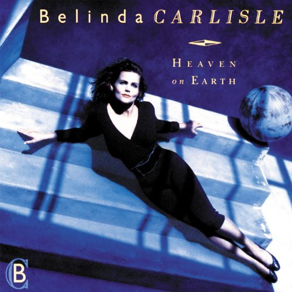

|  |
|
(Lyrics) Sundown all around walking through the summer's end waves crash baby, don't look back i won't walk away again Oh, baby, anywhere you go we are bound together i begin, baby, where you end some things are forever Chorus: circle in the sand, 'round and 'round never ending love is what we've found and you complete the heart of me our love is all we need circle in the sand Cold wind, tide moves in shiver in the salty air day breaks, my heart aches i will wait for you right here Oh, baby when you look for me can you see forever i begin baby, where you end we belong together Chorus Circle in the sand Baby can you hear me can you hear me calling |
(Letra en Español) La puesta del sol Caminando a través del final del verano Las olas chocan cariño, no mires hacia atrás No me iré de nuevo Oh, cariño, adónde quiera que vayas Estamos unidos Yo comienzo, cariño, donde tú terminas Algunas cosas son para siempre Estribillo: Círculo en la arena, alrededor y alrededor Amor que nunca termina es lo que hemos encontrado Y tú completas mi corazón Nuestro amor es todo lo que necesitamos Círculo en la arena Viento frío, la marea se mueve Tiemblo en el aire salado Aparece el alva, mi corazón me duele Esperaré por tí aquí mismo Oh, cariño cuando me miras Puedes ver el para siempre Yo comienzo, cariño, donde tú terminas Pertenecemos juntos Estribillo Círculo en la arena Cariño, puedes escucharme Puedes oírme llamando |